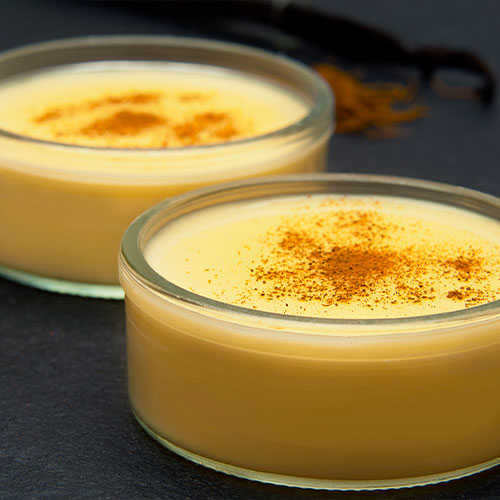

Natilla Colombiana
Ingredientes (para 6 personas):
- 1 litro de leche
- 1 taza de panela rallada (o azúcar morena)
- 1/2 taza de maicena (fécula de maíz)
- 2 astillas de canela
- 1/2 taza de coco rallado (opcional)
- 1 cucharada de mantequilla
- Queso rallado al gusto (opcional)
- Canela en polvo para decorar
Preparación:
- Disuelve la maicena en 1 taza de leche fría para evitar grumos.
- En una olla grande, calienta el resto de la leche con la panela y las astillas de canela. Revuelve hasta que la panela se derrita.
- Agrega la mezcla de maicena poco a poco, sin dejar de mover con una cuchara de palo.
- Cocina a fuego medio hasta que la natilla espese y tenga una textura cremosa.
- Agrega la mantequilla y, si deseas, el coco rallado o el queso.
- Vierte la mezcla en un molde engrasado y deja enfriar.
- Espolvorea canela en polvo por encima antes de servir.
“La natilla es el dulce que enciende la Navidad colombiana, siempre al lado de los buñuelos.”
